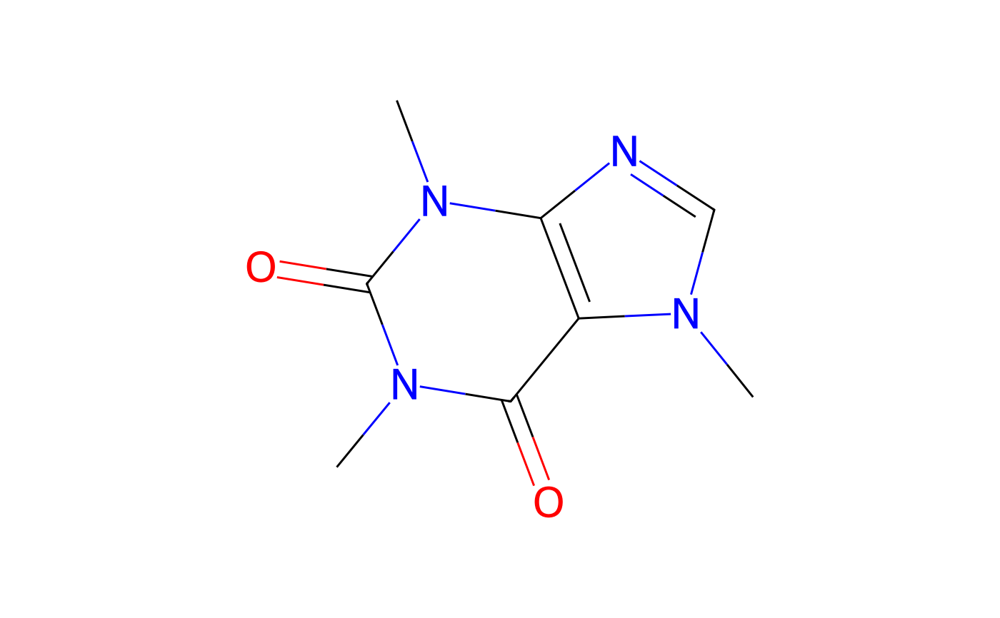

The class is initialised with an identifier. Chemical information is retrieved from the internet. Additionally, it can be generated using RDKit if RDKit and its python bindings are installed.
An R6Class generator object
identifierThe identifier that was used to initiate the object, with attribute 'source'
inchikeyInChI Key, with attribute 'source'
smilesSMILES code, with attribute 'source'
mwMolecular weight, with attribute 'source'
pubchemList of information retreived from PubChem
rdkitList of information obtained with RDKit
mol<rdkit.Chem.rdchem.Mol> object
svgSVG code
PictureGraph as a picture object obtained using grImport
Pict_font_sizeFont size as extracted from the intermediate PostScript file
pdf_heightHeight of the MediaBox in the pdf after cropping
p0Vapour pressure in Pa
cwsatWater solubility in mg/L
chyamlList of information obtained from a YAML file
soil_degradationDataframe of modelling DT50 values
soil_ffDataframe of formation fractions
soil_sorptionDataframe of soil sorption data
PUFPlant uptake factor
new()chent$new( identifier, smiles = NULL, smiles_source = "user", inchikey = NULL, inchikey_source = "user", pubchem = TRUE, pubchem_from = c("name", "smiles", "inchikey"), rdkit = TRUE, template = NULL, chyaml = TRUE )
try_pubchem()chent$try_pubchem(query, from = "name")
get_pubchem()chent$get_pubchem(pubchem_cid)
get_rdkit()chent$get_rdkit(template = NULL)
get_chyaml()chent$get_chyaml( repo = c("wd", "local", "web"), chyaml = paste0(URLencode(self$identifier), ".yaml") )
add_p0()chent$add_p0(p0, T = NA, source = NA, page = NA, remark = "")
add_cwsat()chent$add_cwsat(cwsat, T = NA, pH = NA, source = NA, page = NA, remark = "")
add_PUF()chent$add_PUF( PUF = 0, source = "focus_generic_gw_2014", page = 41, remark = "Conservative default value" )
add_TP()chent$add_TP(x, smiles = NULL, pubchem = FALSE)
add_transformation()chent$add_transformation( study_type, TP_identifier, max_occurrence, remark = "", source = NA, pages = NA )
add_soil_degradation()chent$add_soil_degradation( soils, DT50_mod, DT50_mod_ref, type = NA, country = NA, pH_orig = NA, pH_medium = NA, pH_H2O = NA, perc_OC = NA, temperature = NA, moisture = NA, category = "lab", formulation = NA, model = NA, chi2 = NA, remark = "", source, page = NA )
add_soil_ff()chent$add_soil_ff(target, soils, ff = 1, remark = "", source, page = NA)
add_soil_sorption()chent$add_soil_sorption( soils, Kf, Kfoc, N, type = NA, pH_orig = NA, pH_medium = NA, pH_H2O = NA, perc_OC = NA, perc_clay = NA, CEC = NA, remark = "", source, page = NA )
pdf()chent$pdf( file = paste0(self$identifier, ".pdf"), dir = "structures/pdf", template = NULL )
png()chent$png( file = paste0(self$identifier, ".png"), dir = "structures/png", antialias = "gray" )
emf()chent$emf(file = paste0(self$identifier, ".emf"), dir = "structures/emf")
clone()The objects of this class are cloneable with this method.
chent$clone(deep = FALSE)
deepWhether to make a deep clone.
oct <- chent$new("1-octanol", smiles = "CCCCCCCCO")#>#> #>#>#> <chent> #> Identifier $identifier 1-octanol #> InChI Key $inchikey KBPLFHHGFOOTCA-UHFFFAOYSA-N #> SMILES string $smiles: #> user PubChem_Canonical #> "CCCCCCCCO" "CCCCCCCCO" #> Molecular weight $mw: 130.2 #> PubChem synonyms (up to 10): #> [1] "1-octanol" "Octan-1-ol" "octanol" "111-87-5" #> [5] "N-octanol" "Octyl alcohol" "Capryl alcohol" "caprylic alcohol" #> [9] "n-Octyl alcohol" "Heptyl carbinol"caffeine <- chent$new("caffeine")#>#> #>#>#> <chent> #> Identifier $identifier caffeine #> InChI Key $inchikey RYYVLZVUVIJVGH-UHFFFAOYSA-N #> SMILES string $smiles: #> PubChem_Canonical #> "CN1C=NC2=C1C(=O)N(C(=O)N2C)C" #> Molecular weight $mw: 194.2 #> PubChem synonyms (up to 10): #> [1] "caffeine" "58-08-2" #> [3] "1,3,7-Trimethylxanthine" "Guaranine" #> [5] "Thein" "Methyltheobromine" #> [7] "Cafeina" "Theine" #> [9] "Koffein" "Mateina"